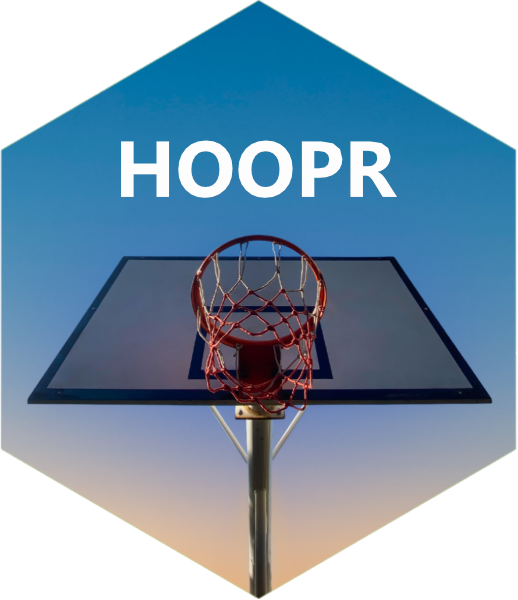

Load NBA player-impact ratings (RAPM / SPM / BPM / DARKO) from the data repo
Source:R/load_models.R
load_mbb_player_value.RdLoads season-level NBA player-impact ratings – one row per
player-team-season, combining regularized adjusted plus-minus (RAPM),
statistical plus-minus (SPM), box plus-minus (BPM), wins above
replacement (WAR), and a DARKO-style skill/projection pair. Produced by
the sdv-py NBA/WNBA possession-engine model program; published to the
nba_player_impact release tag as csv/parquet/rds.
Loads season-level NCAA men's college basketball
player-value ratings – one row per player-team-season, with a
box-score-derived offensive/defensive/net box plus-minus (BPM). Coverage
starts at 2006 (the earliest season with published box-score inputs of
sufficient quality for the model); this tag is parquet-only, with no
csv/rds sibling assets. Produced by the sdv-py NCAA MBB model program;
published to the mbb_player_value release tag.
Loads season-level NCAA men's college basketball team
ratings – one row per team-season, with adjusted
(opponent-strength-normalized) offensive/defensive efficiency, adjusted
tempo, raw efficiency, and a national rank. A KenPom-style
adjusted-efficiency-margin rating. This tag is parquet-only, with no
csv/rds sibling assets. Produced by the sdv-py NCAA MBB model program;
published to the mbb_ratings release tag.
Usage
load_nba_player_impact(
seasons = most_recent_nba_season(),
...,
dbConnection = NULL,
tablename = NULL
)
load_mbb_player_value(
seasons = most_recent_mbb_season(),
...,
dbConnection = NULL,
tablename = NULL
)
load_mbb_ratings(
seasons = most_recent_mbb_season(),
...,
dbConnection = NULL,
tablename = NULL
)Arguments
- seasons
A vector of 4-digit season-ending years for NCAA men's college basketball. Published coverage runs 2006 through the most recent season, with no gaps. Pass
seasons = TRUEfor every published season. (Min: 2006)- ...
Additional arguments passed to an underlying function that writes the season data into a database.
- dbConnection
A
DBIConnectionobject, as returned byDBI::dbConnect()- tablename
The name of the data table within the database
Value
Returns a hoopR_data tibble with one row per player-team-season.
| col_name | types | description |
| player_id | integer | Unique NBA Stats player identifier. |
| player_name | character | Player display name. |
| team_id | integer | Unique team identifier. |
| team_abbreviation | character | Team abbreviation. |
| team_name | character | Full team display name. |
| teams | character | Team abbreviation(s) the player appeared for this season. |
| season | integer | Season identifier (4-digit year). |
| season_type | character | Season portion (e.g. 'Regular Season'). |
| o_rapm | numeric | Offensive regularized adjusted plus-minus. |
| d_rapm | numeric | Defensive regularized adjusted plus-minus. |
| rapm | numeric | Net regularized adjusted plus-minus (o_rapm + d_rapm). |
| off_poss | integer | Offensive possessions used in the RAPM fit. |
| def_poss | integer | Defensive possessions used in the RAPM fit. |
| o_adj_rapm | numeric | Offensive RAPM adjusted for minutes/possession stability. |
| d_adj_rapm | numeric | Defensive RAPM adjusted for minutes/possession stability. |
| adj_rapm | numeric | Net adjusted RAPM (o_adj_rapm + d_adj_rapm). |
| ospm | numeric | Offensive statistical plus-minus (box-score component). |
| dspm | numeric | Defensive statistical plus-minus (box-score component). |
| spm | numeric | Net statistical plus-minus. |
| min | numeric | Minutes played. |
| gp | integer | Games played. |
| obpm | numeric | Offensive box plus-minus. |
| dbpm | numeric | Defensive box plus-minus. |
| bpm | numeric | Net box plus-minus. |
| war | numeric | Wins above replacement. |
| darko_filtered_skill | numeric | DARKO-style filtered skill rating. |
| darko_projected_rating | numeric | DARKO-style forward-looking projected rating. |
| darko_projected_sd | numeric | Standard deviation of the DARKO-style projected rating. |
Returns a hoopR_data tibble with one row per player-team-season.
| col_name | types | description |
| player_id | character | stats.ncaa.org player identifier. |
| player | character | Player display name (title-cased). |
| season | integer | Season identifier (4-digit season-ending year). |
| team_id | character | Unique team identifier. |
| min | numeric | Minutes played. |
| box_obpm | numeric | Box-score offensive box plus-minus. |
| box_dbpm | numeric | Box-score defensive box plus-minus. |
| box_bpm | numeric | Box-score net box plus-minus (box_obpm + box_dbpm). |
Returns a hoopR_data tibble with one row per team-season.
| col_name | types | description |
| season | integer | Season identifier (4-digit season-ending year). |
| team_id | character | Unique team identifier. |
| adj_o | numeric | Adjusted offensive efficiency (points per 100 possessions, opponent-adjusted). |
| adj_d | numeric | Adjusted defensive efficiency (points allowed per 100 possessions, opponent-adjusted). |
| adj_em | numeric | Adjusted efficiency margin (adj_o minus adj_d). |
| adj_tempo | numeric | Adjusted possessions per 40 minutes. |
| raw_o | numeric | Unadjusted (raw) offensive efficiency. |
| raw_d | numeric | Unadjusted (raw) defensive efficiency. |
| games | integer | Games played (season total). |
| rank | integer | National rank by adj_em. |
| adj_em_z | numeric | Z-score of adj_em relative to the season's team distribution. |
Examples
# \donttest{
try(load_nba_player_impact(seasons = most_recent_nba_season()))
#> Warning: cannot open URL 'https://github.com/sportsdataverse/sportsdataverse-data/releases/download/nba_player_impact/nba_player_impact_2027.rds': HTTP status was '404 Not Found'
#> Warning: Failed to readRDS from <https://github.com/sportsdataverse/sportsdataverse-data/releases/download/nba_player_impact/nba_player_impact_2027.rds>
#> ──────────────────────────────────────────────────────────── hoopR 3.1.0.9000 ──
#> # A tibble: 0 × 0
# }
# \donttest{
try(load_mbb_player_value(seasons = most_recent_mbb_season()))
#> Warning: downloaded length 0 != reported length 9
#> Warning: cannot open URL 'https://github.com/sportsdataverse/sportsdataverse-data/releases/download/mbb_player_value/mbb_player_value_2027.parquet': HTTP status was '404 Not Found'
#> Warning: Failed to download parquet from <https://github.com/sportsdataverse/sportsdataverse-data/releases/download/mbb_player_value/mbb_player_value_2027.parquet>
#> ──────────────────────────────────────────────────────────── hoopR 3.1.0.9000 ──
#> # A tibble: 0 × 0
# }
# \donttest{
try(load_mbb_ratings(seasons = most_recent_mbb_season()))
#> Warning: downloaded length 0 != reported length 9
#> Warning: cannot open URL 'https://github.com/sportsdataverse/sportsdataverse-data/releases/download/mbb_ratings/mbb_ratings_2027.parquet': HTTP status was '404 Not Found'
#> Warning: Failed to download parquet from <https://github.com/sportsdataverse/sportsdataverse-data/releases/download/mbb_ratings/mbb_ratings_2027.parquet>
#> ──────────────────────────────────────────────────────────── hoopR 3.1.0.9000 ──
#> # A tibble: 0 × 0
# }